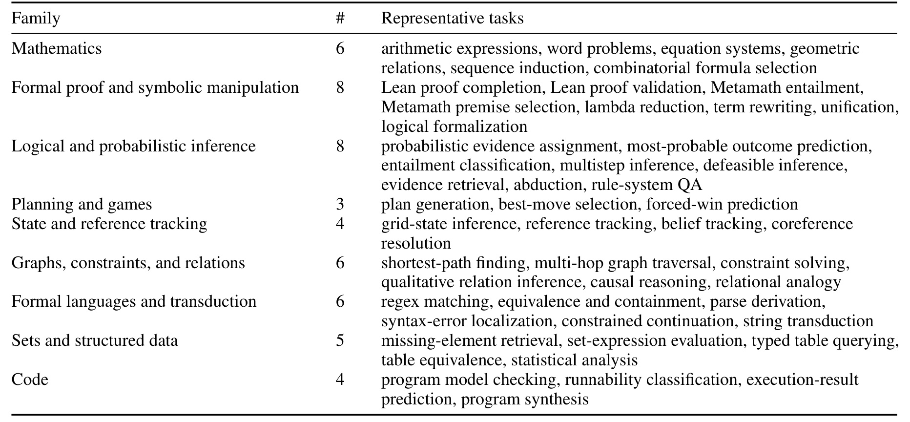
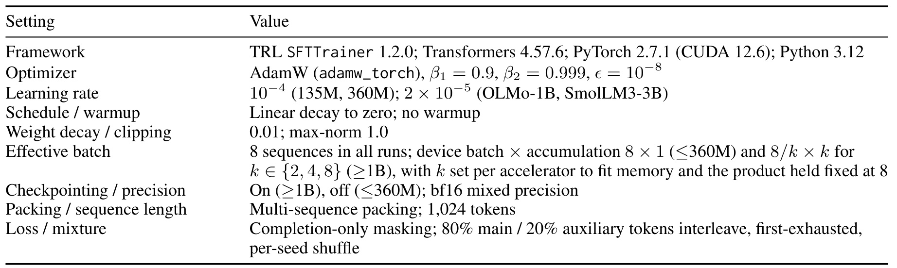
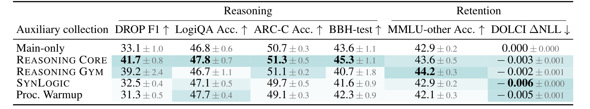
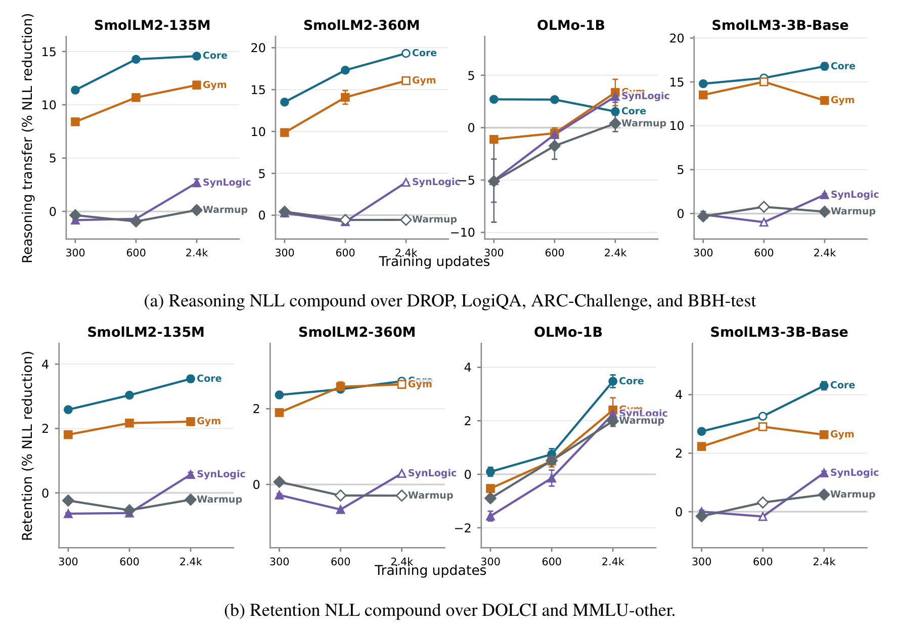
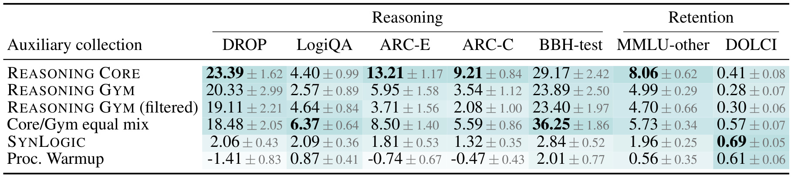
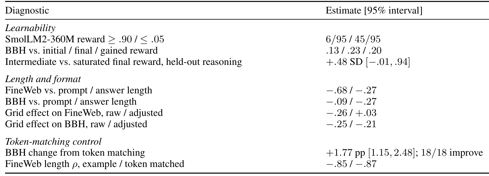
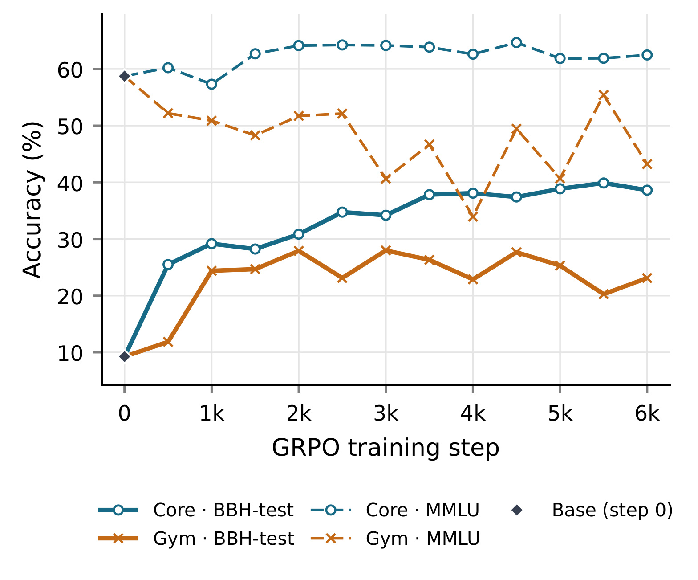
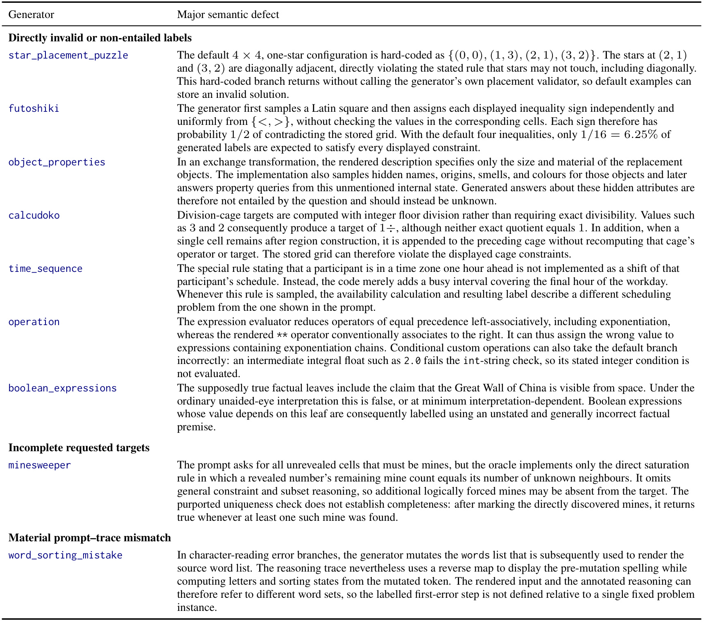

Reasoning Core：面向完成式监督推理训练的广覆盖程序化数据设计
这篇论文研究的不是“再造一种推理算法”，而是更靠前的一层：怎样把程序生成器变成真正有效的推理训练数据。作者 Damien Sileo、Valentin Lacombe 和 Dimitri Kachler 来自 Univ. Lille、Inria、CNRS、Centrale Lille 与 CRIStAL。论文入口为 arXiv:2608.05148，代码已在 reasoning-core 核验公开，生成数据集合也已在 Hugging Face 核验可访问。工作发布 50 个生成器，并用匹配训练预算比较 Reasoning Core、Procedural Warmup、Reasoning Gym 与 SynLogic；其价值在于把“任务可验证”“完成式监督有效”“能否迁移”拆成了三个需要分别验证的问题。
可验证的程序生成问题不会自动成为有效的监督数据：渲染后的题面必须唯一决定目标，答案表示要适合自回归学习，难度区间要提供可学习信号，而且任务还必须在异构混合中保留边际价值。
1. 背景和问题
大模型推理研究常把注意力放在强化学习阶段：设计可验证奖励、增加 rollout、选择更强的策略优化器，再用数学或代码题衡量效果。但模型进入 RL 之前已经携带了预训练与监督阶段形成的表示、解题模式和输出习惯。论文引用的一系列研究都在追问：RL 到底创造了多少新能力，又有多少只是把既有能力重新集中到可获奖的轨迹上？如果早期数据分布决定了后续优化的起点，那么直接研究监督数据层就不是次要工程，而是推理能力形成机制的一部分。
程序生成器看起来很适合这个目标。它可以按需产生新题，显式控制结构与难度，还能调用符号求解器或执行器计算答案。传统静态数据集会被记忆、污染或耗尽，程序任务则能近似无限采样，并为强化学习提供 outcome reward。然而“能执行程序得到一个答案”只证明生成管线在某条路径上跑通，并不证明读者看到的题面蕴含该答案，更不证明这个答案适合 teacher forcing。生成器内部可能使用题面没有展示的隐藏状态；渲染层可能把括号、时区或约束符号写错；参考答案可能只是多个合法 witness 中随机抽到的一个；评分器甚至可能给任意非空字符串满分。这些错误一旦进入训练，就会把确定性程序包装成高置信度噪声。
论文因此区分两个容易混淆的概念。语义有效性问的是：题面是否有正确、可识别的目标，参考答案与评分器是否真的实现了这份语义。训练效用问的是：在给定基础模型、训练目标、数据剂量和混合邻居时，加入该任务能否改善下游能力。前者是数据正确性的必要条件，却不是后者的充分条件。一个完全正确的任务也可能过难、过长、输出空间过窄，或只教会格式；一个大模型零样本已经会做的任务也可能仍能改善小模型表示；相反，极低的零样本 reward 既可能代表有学习空间，也可能只是题坏了。
完成式监督使这些矛盾更尖锐。每个样本只有一条 teacher-forced completion，若同一问题存在许多等价答案，模型在序列早期就会因任意选择受到惩罚。长篇算法轨迹虽然忠实，却会在固定 token 预算中减少独立题目数量，并迫使模型拟合求解器的 bookkeeping。论文关心的是：在同样的更新次数、token 混合比例和主数据流下，哪种程序集合能把预算转化成可迁移信号；这比“集合里有多少任务”或“评分器能不能运行”严格得多。
对推荐系统研究者，这一问题同样直接。召回、排序、约束重排、预算分配和用户状态跟踪都能程序化构造，但生成样本的 oracle 若没有与线上业务语义对齐，离线训练会精确学习错误规则；若 target 序列太长或同质，增加数据量反而压缩真实交互样本的曝光。Reasoning Core 提供的不是一份可直接照搬的推荐数据，而是一套检验合成数据是否值得进入训练混合的思路：先证明题面、目标和 verifier 一致，再测量难度、长度、边际迁移和跨训练设置稳定性。
更深一层的挑战来自“集合”而非单题。两个孤立训练都有效的生成器，放在同一混合里可能因为结构重复、答案分布相似或 token 竞争而相互稀释；一个在 360M 模型上有益的任务，到了不同 tokenizer、不同主语料或更长训练时长也可能换符号。因此论文不尝试给每个任务赋一个永久价值，而是把效用写成训练上下文的函数。这个立场避免了把合成数据选择误做成静态榜单，也解释了为什么实验必须同时保留 main-only、完整集合、孤立任务与不同剂量的配对对照。
论文还把“评测集会做多少”与“训练后能迁移多少”分离。若只用前沿模型零样本正确率筛题，容易删除已经可解但仍有表示学习价值的任务；若只保留低正确率任务，又会把不可学难度、渲染错误和坏评分器混在一起。真正需要的是三角校验：语义审计确认题目正确，task-native reward 描述当前模型能否学会，held-out transfer 衡量这种学习是否离开原任务后仍有用。后文的实验设计正围绕这三个证据层展开。
2. 方法
2.1 广覆盖任务分布、难度控制与高效题面
方法的第一步是定义“广覆盖”究竟覆盖什么。Reasoning Core 用 50 个生成器组织九类任务：数学，形式证明与符号操作，逻辑与概率推断，规划与游戏，状态与指代跟踪，图、约束与关系，形式语言与转导，集合与结构化数据，以及代码。这里的类别只是描述性分组，不被宣称为相互独立的认知技能。关键点是生成器改变语义结构，而不只是替换名称和数字：表达式树、逻辑形式、程序控制流、规划 action schema、游戏转移规则、图拓扑和文法本身都可被采样。

Table 1 把这份“结构多样性”落到可审计的数量上：逻辑与概率、形式证明各有 8 个生成器，数学、图关系、形式语言各有 6 个，结构化数据 5 个，代码与状态跟踪各 4 个，规划与游戏 3 个。每一行还给出代表任务，例如 Lean proof completion、Metamath entailment、plan generation、belief tracking、typed table querying 与 program synthesis。它说明 Core 不是把单一棋盘或算术模板复制 50 次；但表也同时提醒，类别数量不能等价为训练效用，后续仍须在统一预算下测量每个生成器和整套混合的边际贡献。
每个任务把 seed 与 difficulty configuration 映射成 prompt、结构化 reference、metadata 和 semantic scorer。难度不是固定的低中高预设，而是一个全局标量，经任务可覆盖的函数映射到推导深度、计划长度、变量数、分支因子或符号结构规模；作者约定 0 到 5 级都应保持可计算。题面渲染与问题元数据分离，实验使用零样本指令而非 few-shot 示例，把 1024-token 上下文尽可能留给独立问题。训练时模型只看到 prompt 与 completion，生成器和难度控制不进入推理服务；它们的作用是塑造训练分布，并让相同任务能以新 seed 重放。
2.2 规范化完成目标、宽松语义评分与工具隔离
Reasoning Core 的核心数据设计是“训练目标窄、语义接受域宽”。训练端为每个实例选一个确定且紧凑的 canonical completion，例如数字、标签、有序后的集合、表达式、证明行索引、计划或短程序。集合按字典序规范化，等价解不再在开头形成互斥后缀；固定 token 预算也能容纳更多独立题。评测端却不把这个表面形式当作唯一真值：集合按无序语义比较，lambda 项允许变量改名，计划实际执行，Lean proof 编译，程序通过测试。也就是说，teacher forcing 需要单一路径，而自由生成评分接受任意语义正确路径。
这一分工解决了两个方向相反的风险。若训练端保留所有等价答案，监督信号会因任意序列化而冲突；若评测端只做 exact match，则一个合法但不同写法会被错判。论文在 parsing 与 graph pathfinding 上还专门测试了逐步 rationale：分别复现 Earley parser 操作以及 BFS/Dijkstra 的 frontier expansion、距离更新和 predecessor 选择。尽管轨迹语义正确，它们在 BBH development 与 FineWeb NLL 上持续不如紧凑答案；缩短轨迹、匹配或不匹配预算都没有逆转排序。作者没有把它外推成“思维链有害”，而是限定为：正确算法的逐步账本未必是最可迁移的监督目标。
外部求解器让 Lean、Metamath、规划和程序任务可验证，也引入 timeout、版本漂移、不安全执行和 host 差异。Core 固定依赖，提供 Docker 环境，缓存通过验证的实例，并把 verifier failure 与模型答错分开；验证器出错时 fail closed，不能意外给奖励。manifest 保存具体样本、生成器版本与 behavior hash，使一次训练可精确重建。训练阶段消费缓存后的规范答案，评测或 RL 阶段才调用较宽的 scorer；这是同一任务接口服务不同目标，而不是让训练时在线执行所有外部工具。
2.3 统一接口、任务级诊断与混合价值
普通 unit test 只能证明若干已知样例按预期运行，无法描述实际生成分布。论文为此把 Reasoning Gym 与 SynLogic 也适配到统一接口，在同一个 seed、难度、prompt/reference/scorer 抽象下进行匹配比较。每个生成器都先做接口烟测：prompt 非空、实例非退化、reference 得满分、无关答案不会普遍被接受、空答案或畸形答案不会让 scorer 崩溃、序列化 metadata 后评分一致、改变难度有效且生成不会重置全局随机性。但作者明确指出，这些检查不能证明目标唯一、没有 shortcut、难度可学或混合有效。
Table 4 给出了更完整的诊断链。第一层检查 prompt、reference、scorer 是否一致，并要求强模型与参考答案持续冲突后仍经过人工确认；第二层检查答案唯一性、目标熵和 shortcut；第三层检查错误或对抗答案能否被拒绝；第四层再看训练后的 task-native reward、难度范围、prompt/answer 长度、在目标混合中的边际价值，以及跨模型、规模和训练时长的稳定性。每个观察都对应动作：修生成器并加回归测试、规范化答案、收紧难度、减少冗余采样或只报告 regime-specific 结论。它把“数据质量”从一次静态验收改成语义、可学习性与混合效用的连续诊断。
任务效用的低成本估计采用孤立 300-step SFT intervention：一次只加入一个生成器，与相同主数据、seed 和优化设置的 main-only continuation 配对，观察 BBH-development、FineWeb NLL 与 task-native reward。小模型的任务排序只在同模型家族内相对稳定，因此这些结果用于修改相近训练设置中的生成器，而不是作为跨模型通用的数据估值器。最终集合比较则回答另一问题：多个任务交互后，完整混合是否仍提供正的边际监督。孤立任务得分不能直接替代集合级对照。
论文把加入辅助集合 $A$ 后，在评价分布 $E$ 上的相对 answer-NLL 降低定义为：
符号解释：$A$ 是被加入的程序化集合，$E$ 是下游评价分布，$M_{\mathrm{main}+A}$ 是主数据加辅助数据的模型，$M_{\mathrm{main}}$ 是同 seed、同配置的主数据基线；正值表示加入集合后目标答案 NLL 下降。对孤立任务 $t$，再定义：
符号解释：$t$ 是单个生成器，$I_E(t)$ 是它在评价分布 $E$ 上相对 main-only 的影响。前一式回答整个集合是否有边际价值，后一式支撑任务排序、长度相关性和可学习性诊断；两者都依赖明确的模型、训练剂量与主数据上下文，不是任务的永久固有分数。
2.4 模型辅助、人工裁决与回归测试的仓库级审计
仓库级审计把 source code、生成题面、reference 与 scorer 同时放入检查范围。开发中先由 GPT-5.5 High、后由 GPT-5.6 High 做模型辅助代码与样例审查；另一路在最低难度 0 和 1 上调用 Claude Haiku 4.5 作答，把 reward 不等于 1 的样例标记出来。可疑案例先经 Claude Opus 4.6、后经 4.7 辅助裁决，再由人类确认。确认后手工复现、缩成最小反例并加入 regression test。模型判断从未被当作 ground truth；它只扩大审计覆盖，最终语义裁决仍需可复现反例和人工检查。
该流程在 Core 内发现过数学记号与 Python 运算语义不一致、逻辑边界模糊等问题，作者迭代修复，直至最后审查未再发现重大缺陷。对外部集合的回溯审计则确认 Reasoning Gym 105 个注册任务中有 13 个默认路径重大缺陷，SynLogic 有 9 个原生生成器重大缺陷。这里存在不对称：Core 经持续修复，外部库是一次回溯审计，过程既不独立也不盲测。因此正确解读不是“Core 的代码质量已被证明更高”，而是审计流程确实能找到那些普通程序运行和单元测试漏掉的语义错配。
本文的方法章节没有提出新的模型训练损失；核心机制由生成接口、规范答案、语义评分与审计流程共同定义。上面的两个显示公式都是数据干预的评价定义，下一章将结合具体实验读数解释它们。
3. 实验结果
3.1 实验协议与评价口径
主实验比较四个集合：Reasoning Core、Procedural Warmup、Reasoning Gym 与 SynLogic。基础模型为 SmolLM2-135M、SmolLM2-360M、OLMo-1B 和 SmolLM3-3B-Base。主数据流等比例混合 FineWeb-Edu 与 DOLCI；程序集合替换 20% 的 prompt-plus-answer tokens，总更新次数固定，最大长度 1024。样本按支持的难度等级均匀抽取、去重，超长行直接丢弃而不截断，避免 completion-only loss 下把答案尾部切掉。300 至 2400 步的各条件与 main-only 使用相同 seed、数据顺序和优化配置，因此报告的是配对差异。

Table 9 展开了复现所需的控制量：所有运行用 TRL SFTTrainer 1.2.0、AdamW、线性衰减且无 warmup；135M/360M 学习率为 $10^{-4}$，1B/3B 为 $2\times10^{-5}$；有效 batch 固定为 8，1B 以上通过梯度累积适配显存；训练使用 bf16、1024 token packing 与 completion-only masking，主/辅助 token 按 80/20 交错。由于 collection 与配对基线的优化字段完全一致，结果更接近“换入一种辅助分布”的边际效果，而不是超参数优势。不过 20% 比例先在 Reasoning Gym 上依据 BBH validation 选择，仍可能对不同集合有不同适配度。
评价沿用方法章给出的相对 answer-NLL 降低。Reasoning compound 平均 DROP、LogiQA、ARC-Challenge 与 BBH-test；Retention compound 平均 MMLU-other 与 DOLCI。小模型 exact match 接近 floor，NLL 能捕捉尚未翻转最终答案的概率移动；3B 才同时报告准确率/F1。DOLCI 长答案还能检查提升是否只是适应短 target 格式。
3.2 主结果：3B 完成式监督迁移
3B、2400 步、5 个 seed 的行为结果是论文最强证据。Reasoning Core 相对 main-only 把 DROP F1 从 33.1 提到 41.7，LogiQA accuracy 从 46.8 到 47.8，ARC-Challenge 从 50.7 到 51.3，BBH-test 从 43.6 到 45.3；四项推理指标均提升。MMLU-other 从 42.9 到 43.6，说明没有出现明显通用知识坍塌；DOLCI $Δ$NLL 为 -0.003，按表中“越低越好”的行为口径只是极小变化，不应包装成确定的 retention 增益。

Table 2 还显示“Core 最好”需要按指标限定。Reasoning Gym 的 MMLU-other 为 44.2，高于 Core；SynLogic 和 Warmup 在 DOLCI 列的数值更低。Core 的优势是四个 Reasoning 行为指标都超过 main-only，并在这些行列上总体更均衡，而不是每个保留指标都第一。标准差也不可忽略：Gym 的 DROP 为 $39.2\pm2.4$，方差明显高于 Core 的 $41.7\pm0.8$；BBH-test 的 seed 波动约 1 个百分点。论文用五个 seed 支撑主表，比后面的单 seed RL 证据可靠得多。表中的颜色只是相对 main-only 的改善编码，阅读时仍应优先核对原始均值、标准差和指标方向，不能仅凭颜色深浅比较不同列。

Figure 1 把终点表扩展到 135M、360M、1B、3B 与 300/600/2400 步。上排是推理 NLL compound，下排是 retention。Core 在 135M、360M 和 3B 的推理迁移轨迹普遍较高且随训练延长上升；OLMo-1B 却在早期出现多种集合为负、2400 步才回升的现象。Retention 也并非随推理增益单调变化。尤其要注意每个面板用了不同纵轴，不能拿折线的视觉高度跨模型比较。图真正支撑的是：所有集合在部分设置有正迁移，但集合排序依赖模型家族和训练时长，不能把某个短跑结果当作固定排行榜。
附录逐基准 NLL 给出更细的概率证据。Core 在 DROP、LogiQA、ARC-E、ARC-C、BBH-test、MMLU-other 与 DOLCI 上的配对均值分别为 23.39、4.40、13.21、9.21、29.17、8.06、0.41，七项全为正。Core/Gym 等比例混合在 LogiQA 与 BBH-test 上分别达到 6.37 和 36.25，反而超过 Core；SynLogic 的 DOLCI 为 0.69，是该列最高。说明“广覆盖”与具体基准存在互补，单集合平均领先不代表混合优化已经结束。

Table 5 的另一个关键对照是根据 BBH-development 从 Reasoning Gym 选择 50 个“最佳任务”的 filtered 子集。它在 LogiQA 上从 full Gym 的 2.57 提到 4.64，却在 DROP、ARC、BBH-test 和 MMLU-other 多数列变差。开发集上的任务排序没有均匀迁移到其他 held-out evaluation；收窄任务混合也可能损失互补结构。由此可见，选数不能只优化一个 validation 分数，应保持集合级、多基准和 retention 对照。Core/Gym equal mix 在 BBH-test 的 36.25 又提示两套任务可能互补，值得进一步做比例扫描，而不能从单一 50/50 点推导最优混合。
3.3 小模型能否代替大模型做任务开发
作者比较孤立任务在不同基础模型上的排序。SmolLM2 同家族的 135M 与 360M 对 Core、Gym、SynLogic 分别得到 Kendall $\tau_b=0.68,0.75,0.88$，保留 84%、88%、94% 的成对顺序；跨到 OLMo-1B 后，Core 与 Gym 降到约 0.34/0.44，SynLogic 甚至为负。它支持一个有限但有用的工程结论：同家族小模型可以为相近大模型的 generator revision 提供开发信号，跨架构则不可靠。这个诊断仍保留 BBH-development 参与评分，因此不属于最终 held-out 集合比较，也不能包装成通用影响函数。
训练时长也改变集合排序。附录 Table 6 报告四集合在 300→600 步的平均 $\tau_b=0.83$，到 300→1200 只剩 0.42，600→2400 为 0.67。任务/集合在早期易学不等于长训后仍优，开发实验应覆盖接近目标剂量的时长。对真实推荐系统也是如此：短周期离线增益可能来自快速拟合格式或热门模式，长期训练才暴露与主分布的竞争。
3.4 任务级可学习性、长度成本与逐步轨迹负结果
方法章已经定义单任务影响 $I_E(t)$。在这里，任务原生 reward 记录训练前、训练后及增量；prompt 和 answer 长度按任务与难度分层采样后求均值。作者在模型内标准化特征与影响再合并面板，用任务重采样得到 95% 区间。因此这些相关性描述的是观测关联，不是长度或 reward 的严格因果效应。

Table 8 显示，SmolLM2-360M 的 95 个 Gym 任务中只有 6 个训练后 reward 至少 0.90，45 个仍不高于 0.05。训练后 reward 与 BBH 的相关为 0.23，reward gain 为 0.20；“中间可学”相对“已饱和”任务的 held-out reasoning 优势为 $+0.48$ 个标准差，但区间 $[-0.01,0.94]$ 跨零，不能当确定结论。长度信号更强：FineWeb 影响与 prompt/answer 长度相关为 -0.68/-0.27。控制长度后 grid 对 FineWeb 的负效应从 -0.26 变成 +0.03，但对 BBH 仍为 -0.21，说明一部分是 token 成本，一部分可能是任务特定错配。
token matching 控制特别重要。原先按 20% 样本概率混合时，辅助任务较短，只占 13.1% token；把采样概率提到 0.293 以实现真实 20% auxiliary tokens 后，18 个 OLMo-1B 任务的 BBH 全部改善，平均 +1.77 个百分点，95% 区间 [1.15,2.48]。但 FineWeb 与样本长度的相关仍从 -0.85 变为 -0.87，几乎不动。也就是说，控制辅助剂量能改善推理信号，却没有抹去长样本对 retention 的代价。再结合逐步 parser/pathfinding rationale 败给 compact answer，论文把 target token efficiency 从直觉提升为可测的数据设计变量。
3.5 零样本可解性与训练效用不是同一轴
作者用 DeepSeek V4 Flash Instant、Flash High 与 Pro Instant 在不同难度采样上做 task-native free generation，目的不是选任务，而是测量初始可解性。Flash Instant→High 保持模型不变、增加推理时计算；Flash→Pro 则扩大参数但都用 Instant。Flash High 在 18/50 个任务上仍低于 0.75，在 32/50 上低于 0.90。即使是 Flash High 至少 0.90 的 18 个任务，Flash Instant 与 Pro Instant 的均值也只有 0.61 和 0.62。
Figure 3 的两面板按数学/证明、逻辑/概率、规划/状态、集合/关系、图/语言、结构化数据、游戏、代码分组。蓝色实心点通常从空心 Instant 点向右移动，说明同一 Flash 模型增加推理预算比单纯切到更大 Pro Instant 更稳定；例如多项 formal、table 和 code 任务在 High 下接近饱和，而若干 belief tracking、rewriting、program synthesis 仍有明显缺口。浅色区域只表示 reward≥0.90 的近饱和，不表示任务没有训练价值。作者避免了一个常见误判：零样本难题可能是有潜力的监督信号，也可能不可学或有缺陷；零样本易题也可能改善直接预测。必须把可解性与干预后的迁移分开测。
3.6 验证器支持的 RL 可行性
虽然 Core 按 completion-supervised utility 设计，其 semantic scorer 也能直接作为 outcome reward。作者在 Qwen2.5-3B-Instruct 上做单 seed、6000 步 GRPO，对 Core 与 Gym 使用同一优化器、采样配置、有效 batch 和 20 万样本预算，只替换集合与对应 verifier。最终 Core/Gym 的 BBH-test 为 38.6/23.1，MMLU 为 62.5/43.2。

Figure 2 展示 Core 的 MMLU 虚线长期维持约 60% 以上，BBH-test 实线逐步升至接近 40%；Gym 的两条曲线波动明显，MMLU 还低于 step-0 基线。正因为 Gym 条件自身退化，Core 与 Gym 的终点差距不能被解释为稳定的集合级 margin。图能支持的窄结论只有：Core 的 verifier 与任务接口可以跑通有效 RL，训练中 BBH-test 上升且 MMLU 未坍塌。曲线每 500 步评估一次，但没有误差带，也没有第二个 seed，因此中段起伏和终点差值都无法给出方差估计。两条 BBH-test 曲线共享相同的 step-0 点，后续分叉才是集合与 verifier 联合干预的结果。若要比较集合优劣，至少需要多 seed、稳定性诊断，并把顺序 SFT→RL 与重复使用同一集合纳入实验。
3.7 仓库语义审计的证据与边界
SynLogic 的重大缺陷覆盖三类：直接错误或不蕴含标签、不完整目标、prompt 与 trace 错配。例如 futoshiki 独立随机显示不等号，默认四个约束全部与 stored grid 一致的期望概率只有 1/16；object_properties 用题面没有展示的隐藏属性作答；minesweeper 只实现局部 saturation，却声称返回所有必为雷的格子。它们不是“生成风格不好”，而是题面、oracle 与目标集合不一致。

Table 10 逐项给出九个原生生成器的最小缺陷机理：star placement 的硬编码解违反对角不相邻；calcudoko 用 floor division 代替整除；time sequence 把时区偏移实现成工作日末尾 busy interval；operation 对指数采用错误结合方向；word sorting 在渲染与 reasoning trace 间使用了不同词表。完整表格的意义在于证明错误分布在 generation、rendering、target 和 trace 多层，单纯调用最终 scorer 或抽查“程序不崩”无法发现。
Reasoning Gym 的缺陷还包括 scorer 自身失效。game_of_life_halting 把字符串做 bool 转换，任何非空候选都满分；boxnet 顺序执行动作、静默跳过非法动作，既不检查同时冲突也不衡量效率；syllogism 漏掉 middle term 分布条件；calendar arithmetic 计算跨年却把起始年份写到两个端点；rectangle count 统计插入的 primitive 而非最终 ASCII 图中真实可见矩形数。
Table 11 将 13 个确认案例分成评分/验证失败、错误或不蕴含标签、prompt-oracle 错配。最危险的不是小数值误差，而是评分器把错误输出奖励为正确，或用隐藏实现语义替代用户读到的任务语义；这会同时污染 SFT 标签、离线评测与 RL reward。论文另列多个“合法但非 canonical”任务而不计作重大语义缺陷，因为 verifier 理论上可以接受不同 witness；但若 shipped scorer 仍 exact-match 单一样本，它们对完成式监督仍有数据设计风险。审计结果应被理解为流程展示：作者并未做独立盲测，Core 又已在开发中按同一流程修复，所以不能由 13 对 9 推出两个外部仓库的总体质量排名。
4. 总结
4.1 我的判断与工程迁移
Reasoning Core 最有价值的结论是：程序化监督的基本单位不是“一个能运行的 generator”，而是题面、规范训练目标、宽语义 scorer、难度分布、token 成本与目标混合共同定义的一次训练干预。 50 个任务和约 100 亿 prompt-answer tokens 是资源贡献；更重要的是匹配主数据、配对 seed、多时长对照、任务级干预和仓库审计让数据设计可以被证伪。3B 主实验对四项 reasoning 行为指标的同步改善很有说服力，但跨模型/时长排序变化也阻止我们把 Core 简化成普适第一名。
对大模型训练，最直接的迁移原则是把 canonical target 与 semantic verifier 分离：SFT 用紧凑、确定答案提高 token 效率，评测/RL 接受语义等价输出。对推荐系统，可以把同一原则用于组合推荐、约束重排、预算规划或结构化用户状态任务：训练时给出稳定的最小目标，评估时通过约束执行器或业务规则验证多个等价列表；生成器开发要同时报告目标熵、难度、序列长度、离线迁移和与真实日志混合后的边际价值。Table 4 的清单尤其适合转成合成特征/样本上线前的质量门。
4.2 局限、风险与后续跟进
这篇论文至少有五项边界。第一，模型规模止于 3B，不能确定同样的集合排序延伸到更大基础模型。第二，评测偏正式、闭合答案推理，未证明对开放问答、多模态或真实 agent 任务有效。第三，主数据已经含 DOLCI 推理监督，却没有与 GSM8K、MATH 等人工整理成分做匹配比较，因而无法分离“程序化”与“额外推理监督”的全部差异。第四，SFT 与 RL 分开实验，没有测试同一集合先 SFT 再 RL 是否互补或过拟合。第五，RL 只有单 seed，Gym 轨迹退化使集合差距无法稳定估计。外部仓库审计还存在非盲、不独立以及 Core 已被迭代修复的不对称，缺陷数量不能作为质量榜单。
后续最值得跟进三条。其一，在 7B 以上、不同 tokenizer 与不同主数据混合上复现多 seed SFT，并扫描 10%、20%、40% token 比例，验证“紧凑答案+广覆盖”的规模律。其二，做严格的顺序实验：main-only、SFT、RL、SFT→RL 四组都使用独立 held-out 生成 seed，判断同一程序集合在两个阶段是互补还是重复。其三，把任务级数据选择做成多目标问题，同时约束 reasoning gain、retention、长度成本、目标熵和跨模型稳定性，而不是只按 BBH validation 选前 50。还应由独立团队盲审 Core 与外部集合，公开最小反例、修复 commit 和回归测试，才能把仓库级语义质量从作者自审推进到可重复基准。
整体看，论文没有证明“程序数据天然优于人工数据”，也没有证明逐步推理监督普遍无效。它更精确地表明：在匹配 token 与优化设置下，一套经过语义审计、难度校准、答案规范化的广覆盖程序集合，能改善 3B 模型的多项推理指标；而数据的正确性、可学习性、迁移性与训练阶段必须分别验证。这是一份关于如何把合成推理数据做成可靠训练基础设施的实证设计说明，而不是单一榜单冠军报告。